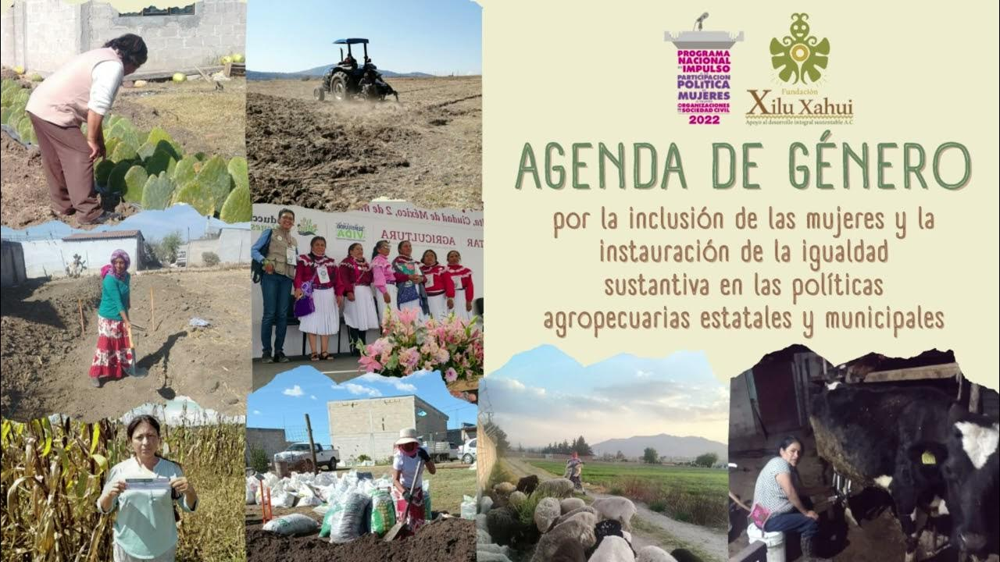
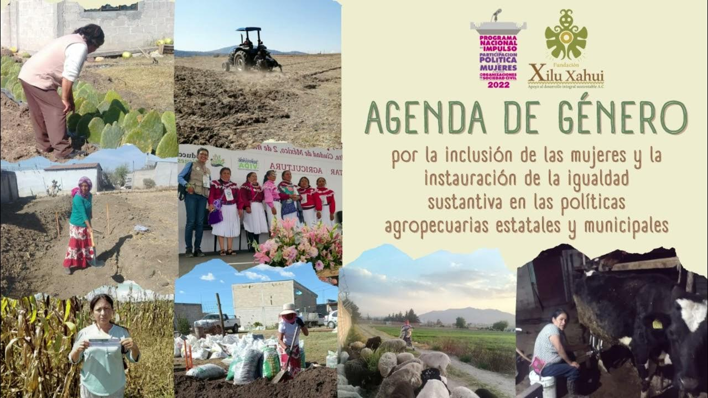

Bienvenidos a Xilu Xahui
Transformando comunidades a través del desarrollo humano y la sustentabilidad.
Conócenos
La Fundación Xilu Xahui tiene como misión generar proyectos estratégicos que contribuyan al desarrollo humano, con un enfoque en la sustentabilidad y el respeto a la diversidad cultural.
En Xilu Xahui trabajamos para fortalecer el desarrollo humano y promover el bienestar y la calidad de vida en las comunidades más necesitadas. Fomentamos entornos seguros, saludables y sostenibles a través de diversas iniciativas sociales y medioambientales.
La Fundación Xilu Xahui busca :"Impulsar la igualdad sustantiva y la paridad de género a través de la elaboración y difusión de una agenda de género con perspectiva de género, interseccional e intercultural, enfocada en fortalecer la incidencia política de las mujeres con discapacidad en el ámbito público. Esto se logrará mediante el ejercicio de los derechos humanos y político-electorales, utilizando métodos educativos, participativos, artísticos (como los corridos tumbados) y la construcción de alianzas estratégicas, con el fin de reducir las desigualdades entre mujeres y hombres, así como entre personas con y sin discapacidad."
Proyectos que realizamos
Apoyamos a la comunidad LGBTQ+
En la Fundación Xilu Xahui apoyamos a la comunidad LGBTQ+, en particular a las mujeres trans,
promoviendo su visibilidad y bienestar. Entre sus iniciativas, se destacan:
1. Colaboración con mujeres trans : La fundación apoya el desarrollo y la visibilidad de mujeres
trans en diversos espacios sociales y culturales.
2. Eventos de visibilización : Organizó el "Performance Trans" en La Paz para visibilizar la
violencia que enfrentan las mujeres transgénero y promover el respeto hacia su comunidad.
A través de estos proyectos, la Fundación Xilu Xahui busca contribuir a la inclusión, el respeto
y la visibilidad de la comunidad LGBTQ+, fortaleciendo sus derechos y su presencia en la sociedad.
Proyectos Socioculturales
En la Fundación Xilu Xahui realizamos varios proyectos socioculturales enfocados en fortalecer las tradiciones
culturales y promover la participación política de las mujeres indígenas.
Entre Nuestras iniciativas destacan:
1. Revitalización de prácticas ancestrales : Adaptan las tradiciones productivas a los desafíos del
cambio climático, buscando mejorar las condiciones de vida de las comunidades.
2. Fortalecimiento del liderazgo de mujeres indígenas : Crean y capacitan grupos de cineastas,
producen películas sobre derechos humanos y organizan caravanas cinematográficas para sensibilizar
a la comunidad y fomentar la inclusión de las mujeres en la política.
Estos proyectos promueven la participación activa de las comunidades en la vida sociopolítica y la
preservación de su patrimonio cultural.
Proyectos Agropecuarios
En la Fundación Xilotl, Asociación para el Desarrollo Social A.C., llevamos a cabo diversos proyectos agropecuarios
con el objetivo de promover el desarrollo rural integral y sostenible en comunidades indígenas y campesinas.
Nuestras iniciativas incluyen:
1. Fortalecimiento de la economía campesina : Impulsan la generación de ingresos y el ahorro mediante el
uso de recursos locales, apoyando a las personas en la producción, procesamiento y comercialización de
productos agrícolas.
2. Capacitación en emprendimientos agropecuarios : Ofrecen formación en planes de negocio, diseño de
proyectos productivos y economía solidaria, con el fin de fomentar la creación y gestión de emprendimientos
agropecuarios en las comunidades.
3. Desarrollo de proyectos productivos locales : Apoyan la implementación de iniciativas como viveros y
producción de miel, proporcionando capital semilla y capacitación a emprendedores locales.
Estas acciones buscan mejorar las condiciones de vida de las comunidades rurales, promoviendo su autonomía
y sostenibilidad económica a través del desarrollo agropecuario.
Personas con Discapacidad
En la Fundación Xilu Xahui realizamos varios proyectos para apoyar a personas con discapacidad,
destacando su enfoque en la inclusión social y política. Algunos de nuestros proyectos incluyen:
1 Corridos tumbados modificados: Creación de canciones por mujeres con discapacidad para promover su
participación en la sociedad.
2 Capacitación en derechos político-electorales: Forman a mujeres con discapacidad para que puedan
participar plenamente en la política.
3 Proyectos con perspectiva de género: Apoyo a mujeres discapacitadas, artesanas, campesinas y trans,
promoviendo la inclusión social.
Estas iniciativas buscan empoderar y garantizar la participación activa de las personas con
discapacidad en distintos ámbitos.
Niños y Jovenes
En la Fundación Xilu Xahui implementamos diversas iniciativas enfocadas en apoyar a niños, niñas y
adolescentes, buscando su desarrollo integral y bienestar.
Entre nuestros proyectos destacados
se encuentran:
1. Apoyo a niñas, niños y adolescentes : La fundación trabaja para llevar alivio y esperanza a este grupo,
enfocándose en su bienestar y desarrollo.
2. Educación y sensibilización : A través de proyectos como "Mis Derechos Sexuales y Reproductivos:
El musical", buscan informar y sensibilizar a los jóvenes sobre sus derechos y responsabilidades.
Estas acciones reflejan el compromiso de la Fundación Xilu Xahui con el bienestar y desarrollo de niños y
adolescentes, promoviendo su participación activa y el respeto a sus derechos en la sociedad.
Misión
Reducir la desigualdad y fomentar el desarrollo sustentable mediante la participación activa de la comunidad.

Visión
Ser una organización líder en el fortalecimiento de la convivencia comunitaria y el respeto por el medio ambiente.
Eventos Destacados
Explora algunos de los momentos más significativos en los que trabajamos junto a la comunidad.
.jpg) 


.jpeg)
.jpeg)
Premios que ha ganado Xilu Xahui
¡Quieres Conocer mas de nosotros, Súmate!
Tu participación es clave para transformar la realidad de muchas comunidades. ¡Juntos podemos hacer la diferencia!